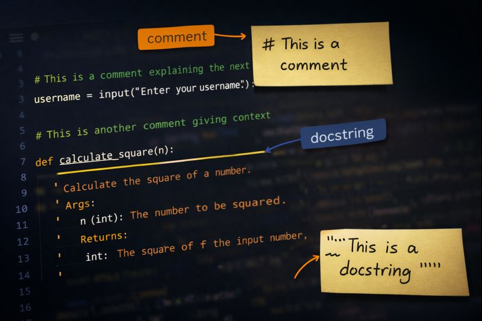
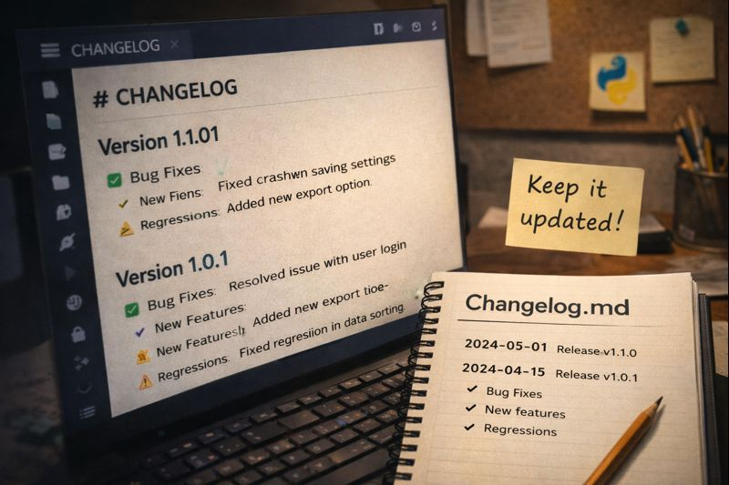
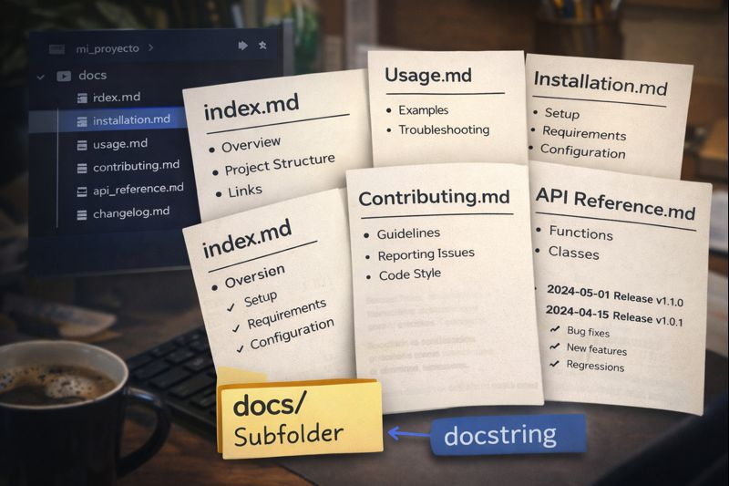

Documentación en Proyectos de Software¶
Introducción: ¿Por qué documentar?¶
Documentar un proyecto de software no es un añadido opcional: forma parte esencial del producto. Una buena documentación:
- Convierte el conocimiento “que está en tu cabeza” en conocimiento compartible y verificable: cualquiera puede entender el objetivo, montar el entorno y usar el proyecto sin depender de que el autor esté disponible.
-
Aclara expectativas: deja por escrito qué hace el sistema, cómo se usa y qué NO hace. Eso evita suposiciones y discusiones, y permite evaluar el trabajo con criterios claros (especialmente en entornos educativos o de equipo).
-
Reduce drásticamente el tiempo de incorporación de nuevas personas: alguien nuevo puede entender qué hace el sistema, cómo se ejecuta, cómo está organizado y cuáles son las reglas clave sin depender de que otra persona se lo explique en vivo.
- Evita errores de uso y malentendidos: se define cómo se debe usar (inputs, outputs, ejemplos, casos límite) y qué comportamientos no están soportados. Así se reducen suposiciones y usos incorrectos.
- Facilita el mantenimiento a largo plazo: cuando pasan semanas/meses, la documentación conserva el contexto (por qué se hizo así, qué inconvenientes había, qué partes son delicadas). Esto hace más rápido y seguro corregir bugs o añadir funcionalidades.
- Hace visibles las decisiones técnicas y de diseño: porque registra elecciones importantes (capas, patrones utilizados, dependencias, estructura, razones para elegir A y no B). Eso permite revisarlas, justificarlas y cambiarlas con criterio sin “romper” el diseño.
- En entornos de equipo:
- Ayuda a evaluar: deja claro qué se pedía, qué decisiones se tomaron y con qué criterios (requisitos, supuestos, límites). Así la corrección o revisión no depende de “adivinar” la intención del autor.
- Permite replicar resultados: otra persona puede montar el entorno, ejecutar el proyecto y obtener el mismo resultado siguiendo pasos concretos. No vale la excusa "en mi ordenador funciona"
- Facilita coordinar cambios: cuando hay varias personas tocando el código, la documentación reduce malentendidos: define interfaces/contratos, reglas de negocio y convenciones. También ayuda a saber qué hay que actualizar cuando se cambia algo
Aspectos esenciales que debe cubrir la documentación¶
-
Propósito y alcance: explica:
- El “para qué” del proyecto en unas pocas líneas
- Qué problema resuelve y para quién (usuarios finales, alumnado, equipo interno).
- Define qué incluye (funcionalidades principales) y qué excluye (límites, “no hace X”).
- Aclara el nivel de madurez (demo, producto mínimo viable - MVP, producción) y criterios de éxito.
-
Instalación y requisitos:
- Indica la versión mínima (y recomendada) de Python
- El gestor de dependencias (pip/poetry)
- Cómo crear/activar el entorno (venv).
- SO soportados
- Prerequisitos (BD, librerías del sistema).
- Da comandos reproducibles para instalar y comprobar que funciona.
-
Uso:
- Describe los flujos típicos: “cómo se ejecuta” y “qué espero ver”.
- Incluye ejemplos copiables (comandos, entradas/salidas), parámetros habituales y casos límite (entradas inválidos, archivos ausentes, permisos).
- Suele incluirse un “quickstart” para probar rápidamente la aplicación
-
Arquitectura y diseño:
- Muestra la estructura de carpetas y qué responsabilidad tiene cada módulo/paquete/capa.
- Explica patrones de diseño utilizados, etc.
-
API/contrato (si aplica):
- Son las reglas con las que otros componentes (u otras personas) pueden usar tu sistema sin mirar el código.
- Define claramente las interfaces públicas: funciones, clases, endpoints, códigos de estado y errores.
- Documenta validaciones, tipos esperados, campos obligatorios/opcionales.
- Añade ejemplos de peticiones/respuestas y cómo manejar fallos.
-
Configuración:
- Enumera variables de entorno, archivos
.env/config, parámetros y valores por defecto. - Explica qué es obligatorio, qué es opcional y qué pasa si falta.
- Incluye ejemplos seguros (sin secretos) y recomendaciones (no commitear credenciales, usar plantillas tipo
.env.example).
- Enumera variables de entorno, archivos
-
Testing y calidad:
- Explica cómo ejecutar tests (unit/integration), cómo interpretar resultados y qué cobertura se espera (si aplica).
- Incluye herramientas de calidad (formatter, linter, ..)
- Define convenciones: estilo, naming, estructura de tests, y cuándo se considera “listo para merge”.
-
Operaciones (si aplica):
- Describe cómo desplegar/ejecutar en entorno real, cómo configurar logging, dónde mirar si algo falla (troubleshooting).
- Indica backups si hay datos, y cómo preparar datos de ejemplo.
- Incluye límites operativos (rendimiento, tamaño, dependencias externas) y procedimientos de recuperación.
-
Proyecto y colaboración:
- Guía de contribución (cómo abrir issues/PRs), estrategia de ramas (main/develop/feature), revisión de código y reglas de merge.
- Estilo de commits (convenciones), versionado, licencia y changelog/release notes.
- Aclara responsabilidades y proceso para cambios en la documentación.
Documentación dentro del código (inline)¶

Aparte de los archivos que debe incluir un archivo con su documentación, los archivos con código incluyen la denominada documentación inline
La documentación inline (docstrings, comentarios, nombres de variables, clases, métodos y funciones) es la primera que consulta un desarrollador durante el mantenimiento. El objetivo: entender qué hace, por qué y bajo qué condiciones sin ejecutar el código.
Qué es un docstring (y dónde se escribe)¶
Un docstring es una cadena de texto (string) entre comillas triples """ que se coloca como primer statement dentro de un módulo, clase o función/método para describir su propósito y su uso.
Python lo guarda en el atributo especial .__doc__ (por ejemplo, mi_funcion.__doc__).
Tipos más comunes y dónde se especifica cada uno:
- Docstring de módulo: al principio del fichero
.py(debe ser la primera línea del módulo). Describe el objetivo del módulo, conceptos y uso general. - Docstring de clase: justo debajo de
class NombreClase:, como primera instrucción dentro del bloque de clase. Describe responsabilidad, invariantes y colaboraciones. - Docstring de función/método: justo debajo de
def nombre(...):, como primera instrucción dentro del bloque de la función. Describe propósito, parámetros, retorno, excepciones y ejemplos.
Ejemplo de docstring útil:
def calcular_total_centimos(items):
"""Calcula el total en céntimos de una lista de items.
El total nunca puede ser negativo. Si algún ítem tiene precio final negativo
(ej. descuento > precio), se lanza error.
Args:
items: Lista de ítems a sumar.
Returns:
Total en céntimos (entero positivo o cero).
Raises:
ValueError: Si algún ítem tiene precio final negativo.
"""
total = 0
for item in items:
if item.precio_final_centimos < 0:
raise ValueError("Precio final negativo en ítem")
total += item.precio_final_centimos
return total
Cómo ver el docstring en Python con .__doc__:
Qué documentar dentro del código¶
- Docstring de módulo: qué problema resuelve el módulo, qué conceptos define y cómo se usa a alto nivel. Incluye supuestos importantes (por ejemplo, “los importes se manejan en céntimos”) y cualquier limitación relevante.
- Docstrings de clases: responsabilidad principal (qué representa y qué no), invariantes que siempre deben cumplirse (por ejemplo, “saldo nunca negativo”) y cómo se relaciona con otras clases (colaboradores, dependencias).
- Docstrings de funciones/métodos públicos: propósito (qué hace y para qué), entradas y salidas (tipos, unidades), errores/excepciones que puede lanzar y ejemplos cortos de uso. Si hay casos límite importantes, descríbelos explícitamente.
- Reglas de negocio: validaciones y restricciones (rangos, formatos), unidades y conversiones (euros → céntimos), decisiones no obvias y “por qué” se hace así (compromisos a los que se ha llegado). Esto es lo que más cuesta entender cuando pasa el tiempo.
- Segmentos de código: cuando el propio código (aunque esté bien nombrado) no puede expresar claramente el “por qué” de lo que hace.
Al comentar:
- Explica por qué (nunca repitas lo obvio del código).
- Evita ruido: no comentes lo evidente; elimina comentarios obsoletos.
Ejemplo de comentarios en archivo de proyecto)
Eligiendo nombres¶
Un buen código es autoexplicativo y requiere poca documentación. Uno de los aspectos que ayuda a lo anterior es elegir de forma correcta los nombres de variables, funciones, clases, métodos y funciones.
Los nombres son parte de la documentación. Un nombre bueno reduce la necesidad de comentarios y evita malentendidos.
Recomendaciones para elegir nombres¶
- Describe la intención: qué representa o qué hace, no cómo se implementa.
- Usa el vocabulario del dominio: si el proyecto habla de "producto", "saldo", "item", usa esas palabras.
- Evita abreviaturas raras:
cfg,tmp,auxsuelen ocultar significado (salvo abreviaturas del dominio muy comunes). - Incluye unidades y forma cuando aplique:
precio_centimos,duracion_segundos,fecha_inicio. - Booleans como preguntas:
is_activo,tiene_stock,puede_comprar. - Colecciones en plural:
productos,items,productos_por_id. - Consistencia con convenciones: funciones/métodos en
snake_case, clases enPascalCase, constantes enMAYUSCULAS.
Ejemplos de nombres mal elegidos (y alternativas)¶
# Mal: no dice que es "x" ni que unidad usa "p"
x = 7
p = 150
# Mejor
numero_productos = 7
precio_centimos = 150
# Mal: verbo genérico, no se sabe qué procesa ni con qué efecto
def procesar(d):
...
# Mejor: verbo + objeto + (si hace falta) contexto
def aplicar_descuento_item(item):
...
# Mal: nombre engañoso (parece lista, pero es dict)
productos = {"A1": "Agua", "B2": "Cola"}
# Mejor
productos_por_codigo = {"A1": "Agua", "B2": "Cola"}
# Mal: acrónimos sin sentido y roles confusos
class Mng:
def do(self): ...
# Mejor
class MaquinaExpendedora:
def vender_item(self, codigo: str) -> "Item": ...
Idea: Si al leer un nombre de identificador te preguntas "¿qué significa?", ese nombre es candidato a ser renombrado.
Los archivos README.md¶
README.md es el archivo “de entrada” de un proyecto (normalmente en la raíz del repositorio) escrito en Markdown. Es lo primero que ve alguien al abrir el proyecto en GitHub/GitLab/Codeberg o al clonar el repositorio.
En muchas herramientas para visualización de documentación este archivo se abre automáticamente al entrar en una carpeta, es el equivalente a index.html en las carpetas de proyectos web
Es importante incluirlo. Se suele utilizar para:
- Explicar en qué consiste el proyecto y para qué sirve en unas pocas líneas.
- Dar instrucciones de instalación y ejecución (idealmente “cómo lo pongo en marcha” rápido).
- Indicar requisitos (versiones, dependencias, sistema).
Otros aspectos que se pueden incluir son:
- Muestra cómo se usa con ejemplos (comandos, entradas/salidas).
- Estructura del proyecto
- Acceso a la documentación.
- Ejecución de tests
Puede haber archivos README.md en subcarpetas del proyecto para usarlos como índice o documentación específica del subpaquete o módulos incluidos en la carpeta.
Documentando nuestro proyecto¶
Los archivos de documentación que deberíamos incluir en nuestro proyecto son:
expendedora/
README.md
CHANGELOG.md
docs/
README.md
DESCRIPCION_Y_ALCANCE.md
EJECUCION.md
ARQUITECTURA_POR_CAPAS.md
CASOS_DE_USO.md
REGLAS_DE_NEGOCIO.md
MODELO_DE_DOMINIO.md
CONTRATO_REPOSITORIO.md
DATOS_INICIALES.md
TESTS_Y_PASOS.md
TROUBLESHOOTING.md
En la carpeta raíz del proyecto se suelen incluir los archivos:
README.mdcomo página de entrada rápida a la documentación (propósito, estructura por capas y ejecución).CHANGELOG.mdpara registrar cambios por entrega/version (nuevas funcionalidades, cambios, correcciones y notas de compatibilidad).

Ejemplo de CHANGELOG.md
# Changelog
Todos los cambios relevantes del proyecto, organizados por versión/entrega.
## [0.2.0] - 2026-01-28
### Added (Nuevas funcionalidades)
- Añadida la documentación completa en `docs/`.
- Añadido `CHANGELOG.md` para registrar la evolución del proyecto.
### Changed (Cambios)
- Actualizado el `README.md` para incluir quickstart, estructura y comandos de ejecución.
- Ajustado el contrato del repositorio para incluir `eliminar(codigo)`.
### Fixed (Correcciones)
- Corregido un bug al calcular el cambio cuando el saldo era exacto (ahora devuelve `0.0`).
- Corregidas validaciones de código de producto para normalizar mayúsculas y espacios.
### Deprecated (Obsoleto)
- Marcada como obsoleta la función `crear_items_iniciales()` (usar `crear_repositorio_con_datos()`).
### Removed (Eliminado)
- Eliminadas pruebas antiguas que dependían de inputs manuales no reproducibles.
### Security (Seguridad)
- Evitado imprimir datos sensibles en logs (si aplica).
### Compatibility / Breaking changes (Compatibilidad)
- **Breaking**: `MaquinaExpendedora` ahora requiere un repositorio que implemente `guardar/obtener/listar/eliminar`.
- Para migrar: sustituye listas de `Item` por `RepositorioProductosMemoria` y carga items con `guardar(...)`.
## [0.1.0] - 2026-01-14
### Added (Nuevas funcionalidades)
- Versión inicial de la máquina expendedora por capas con menú de consola y repositorio en memoria.

En la subcarpeta docs/:
docs/README.md: índice de la documentación de esta fase (qué leer primero) y enlaces rápidos.docs/DESCRIPCION_Y_ALCANCE.md: descripcion funcional del proyecto (texto que explica el proyecto desde el punto de vista del usuario (qué hace y cómo se usa), sin entrar en detalles técnicos de implementación, objetivos de la fase y alcance (funcionalidades incluidas/excluidas, supuestos y limites).docs/EJECUCION.md: como ejecutar el menu (python -m expendedora.presentation.menu), requisitos (Python) y ejemplos de flujo.docs/ARQUITECTURA.md: explicacion de capas y dependencias permitidas (presentation -> application -> domain; infrastructure como adaptador).docs/CASOS_DE_USO.md: describir las opciones del menú (1..8) como casos de uso: entrada, validaciones, salida, errores (ValueError).docs/REGLAS_DE_NEGOCIO.md: reglas implementadas endomain/(validaciones deItem, descuento 0..100, saldo, stock, compra/cancelacion).docs/MODELO_DE_DOMINIO.md: entidades y responsabilidades:Item,ItemConDescuento,MaquinaExpendedora; invariantes (condiciones que siempre deben cumplirse para que una entidad del dominio sea válida, antes y después de cualquier operación) y colaboraciones (relaciones e interacciones que una entidad tiene con otras partes del dominio o con contratos).docs/CONTRATO_REPOSITORIO.md: contrato esperado porMaquinaExpendedora(guardar,obtener,listary, en memoria,eliminar) y como sustituirlo por otra persistencia.docs/DATOS_INICIALES.md: que cargacrear_repositorio_con_datos(), que datos trae, y como modificarlos para pruebas/demos.docs/TESTS_Y_PASOS.md: como ejecutar los tests y que valida cada uno.docs/TROUBLESHOOTING.md(opcional): errores comunes (codigo inexistente, saldo insuficiente, sin seleccion, sin stock) y como reproducirlos/arreglarlos.